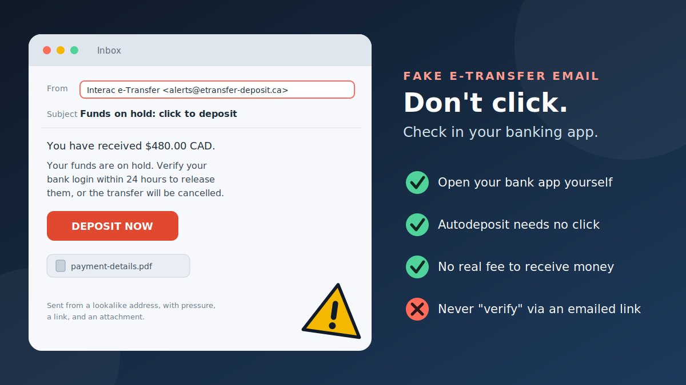

"You have received $480.00. Funds are on hold. Click to deposit." If you sell things on Kijiji or Facebook Marketplace, share rent with a roommate, or get paid by friends, an Interac e-Transfer email is part of normal life in Canada. That familiarity is why a fake one works. It looks like good news, and good news lowers your guard.
How fake Interac e-Transfer emails work
Real e-Transfer notifications are routine, so scammers copy the look and wording. The fake usually follows four steps.
- The bait. An email or text says you have received money, or that a buyer has paid for your item.
- The twist. The money is "on hold," "pending," or in "escrow," or your account needs to be "verified" or "upgraded."
- The ask. You are told to click a link and sign in to your bank, pay a small fee, or open an attachment.
- The loss. The page captures your banking login, or the fee and any "refund" you send go straight to the scammer. No real transfer ever existed.
Where these emails show up
| Situation | The story | What the scammer wants |
|---|---|---|
| Selling online (Kijiji, Marketplace) | A "buyer" has paid, but the funds are held until you act | A fee, your banking login, or an "overpayment" refund |
| Unexpected "you received money" email | A company or stranger has sent you money | Your banking login through a fake deposit page |
| Government payment claim | A tax refund or benefit "via e-Transfer" | Your personal and banking details |
| Rental or job offer | A deposit or "equipment" payment by e-Transfer | Your money, then silence |
Two different frauds that get mixed up
Most guides lump everything under "e-Transfer scams," but the defences differ, so it helps to know which one you are facing.
- A fake notification. The email or text is not from Interac at all. Nothing was sent. The aim is to steal your login or fee.
- An intercepted real transfer. A real transfer is sent, but someone gets into the recipient's email, intercepts the notification, and guesses the security answer. Banks such as TD and Desjardins describe this one, and recommend Autodeposit, a hard-to-guess answer that is not hinted at in the question, and sharing the answer by a different channel than the transfer details.
The first is solved by not trusting the message. The second is solved by securing your email and using Autodeposit.
Warning signs of a fake e-Transfer email
- You did not expect it, or it comes from a company or person you do not know.
- It has an attachment. Provincial regulator FCNB advises that Interac does not send attachments with e-Transfer notifications.
- It says funds are "on hold" or in "escrow." FCNB says Interac does not offer an escrow service.
- It asks for a fee, an "upgrade," or a "security deposit" to release the money.
- It sends you to a page that asks for your banking login, card number, or PIN.
- It sets a deadline and warns the transfer will be cancelled.
- The sender's address looks off. A genuine notification comes from a known Interac address, so a lookalike domain is a warning. Sender names can be faked, so the display name alone proves nothing.
- The "buyer" overpaid and wants the difference sent back.
- It claims to be from the CRA. FCNB reports that the CRA does not use Interac e-Transfer to send or receive payments.
- Someone asks for your e-Transfer reference number (it starts with CA). Interac advises not to share it with anyone.
How to verify a transfer safely without clicking
You can check almost any e-Transfer claim without touching a link in the email.
- Pause and ask yourself. Were you expecting money? From whom, and how much? If not, treat it as suspicious.
- Confirm with the sender through another channel. Call or message them on a number you already have. Interac recommends contacting the sender through a different channel if you suspect fraud.
- Go to your bank yourself. Open your banking app, or type your bank's address into your browser, and look at your accounts and recent transactions. Do not use the email's link to get there.
- Look at the sender's real address. Open the email details to see the full address, not just the display name. ATB says a genuine notification comes from
notify@payments.interac.ca. Even a matching address can be spoofed, so do not let this check be your only one. - Read the link without opening it. Hover over it on a computer, or press and hold on a phone. If the address is not your bank's or Interac's, do not click.
- Use Autodeposit to skip the email entirely. With Autodeposit, funds go straight into your account with no click needed. Set it up in your online banking, then ask the sender to send the money again.
- If you are selling, do not hand over the item or send anything until the money shows as deposited in your own account. A screenshot or an "on hold" email is not payment.
- Never send money to get money. Do not pay a fee to receive a transfer, and do not "refund" an overpayment.
How to check a suspicious phishing link
The safest check is not to click. If you want to look closer, use these steps.
- Find the domain. It is the part right after
https://and before the first single/. Inhttps://interac.ca.deposit-funds.com/login, the real site isdeposit-funds.com, not Interac. - Read the ending first. The last parts decide who owns the page. Anything in front can be made up.
- Watch for extras: added words like "deposit," "secure," or "verify," hyphens, a swapped letter, or an odd ending.
- Compare with your bank's address, which you can find on the back of your card or in your banking app.
- Do not trust the padlock. https only means the connection is encrypted. Fake pages can have it too.
- Be careful with shortened links like bit.ly, which hide the destination.
Try the link red-flag scanner
Paste a link you received. The tool reads the address only. It does not open the link, and nothing you paste leaves your browser.
Realistic examples
These are composite examples written to show the pattern. They are not reports about real people.
Prevention tips
- Set up Autodeposit. Interac recommends it for convenience and added security.
- Protect your email. Use a strong, unique password and two-step sign-in on the email account that receives e-Transfer notices.
- Keep your reference number private. Never share the number that starts with CA, even if someone asks.
- Make security questions hard to guess, never put the answer in the question, and share the answer by a different channel.
- Send money only to people you know and trust, as you would with cash. A deposited transfer cannot be reversed.
- Meet in a public place for marketplace sales, and see a rental unit before paying a deposit.
- Save your bank's number from the back of your card, and turn on transaction alerts.
- Report and delete fake messages instead of replying.
What to do if you have been scammed
Act quickly, and do not be embarrassed. These scams are built to fool careful people. The steps follow Interac's advice and the Canadian Anti-Fraud Centre's victim checklist.
If you only clicked the link
- Close the page and do not enter anything.
- Delete the email or text, or forward it to the places listed below if you want to report it.
- Run a security scan if you downloaded a file, and change your email password as a precaution.
If you entered your banking login or card details
- Contact your bank immediately, using the number on its website or the back of your card, as Interac advises. Ask them to secure your accounts and cards.
- Change your passwords for online banking and for your email, starting with email.
- Report it to the Canadian Anti-Fraud Centre at 1-888-495-8501 or through its online reporting system.
- Report to your local police and ask for a file number.
If you sent money
- Call your bank at once. Interac says a transfer cannot be reversed once it has been deposited, so every minute counts. Your bank can tell you what, if anything, can still be done. Recovery cannot be promised.
- Report to the police and the CAFC, and keep emails, screenshots, the sender's address, and the transfer details.
- If it happened on Kijiji or Facebook, report the ad or profile on the site, using links such as "Report Ad" or "Report Abuse."
- Ignore anyone offering to recover your money. The CAFC warns that victims are often targeted again with promises of getting money back.
If you shared personal information (such as your SIN or ID)
- Report to both credit bureaus, Equifax Canada and TransUnion Canada, and ask about placing fraud alerts or flags on your file.
- Check your credit reports for accounts or loans you did not open.
- Contact the police if you find suspicious activity, and update your file with them.
You can read the CAFC's full victim checklist for more detail. If you are in immediate danger, call 911.
Conclusion
A fake Interac e-Transfer email works because the real thing is so ordinary. You do not need to spot every clever detail. You need three habits: do not trust a transfer you cannot see in your own bank account, do not use links from unexpected e-Transfer emails, and never pay to receive money. Set up Autodeposit, secure your email, and confirm with the sender when anything feels off.
Similar tricks appear elsewhere. Read our guides on the fake QR code verification scam, the fake digital identity verification link scam, and the fake AI customer support chat scam. Our fake UPI refund scam guide explains the same idea for India's payment system, so use the Canadian contacts above if you are in Canada.
Got an e-Transfer email or text you are unsure about? Paste the message into our free checker for a quick first read.
Frequently asked questions
What is a fake Interac e-Transfer email scam?
It is a scam where an email or text that looks like an Interac e-Transfer notification claims you have received money, or that funds are on hold. Its link or attachment is designed to steal your banking login, make you pay a fee, or get you to send money back.
How can I tell if an Interac e-Transfer email is real?
Be suspicious of any transfer you did not expect, any email with an attachment, any message saying funds are held in escrow or need a fee, and any link asking for your banking login. Confirm with the sender through another channel, and check your own banking app rather than the email.
Can I receive an e-Transfer without clicking a link?
Yes. With Interac e-Transfer Autodeposit, funds go straight into your account with no email link or security question. You can set it up in your online banking and ask the sender to send the money again.
Can an Interac e-Transfer be reversed if I was scammed?
Interac says a transfer cannot be reversed once the recipient has deposited the funds. If you sent money to a scammer, contact your bank immediately and report the fraud, but recovery cannot be promised.
Where do I report a fake e-Transfer email in Canada?
Report it to the Canadian Anti-Fraud Centre at 1-888-495-8501 or through its online reporting system. If you lost money or shared banking details, also contact your bank, your local police, and the two credit bureaus, Equifax and TransUnion.
Got an e-Transfer message you want checked?
Run it through the checker